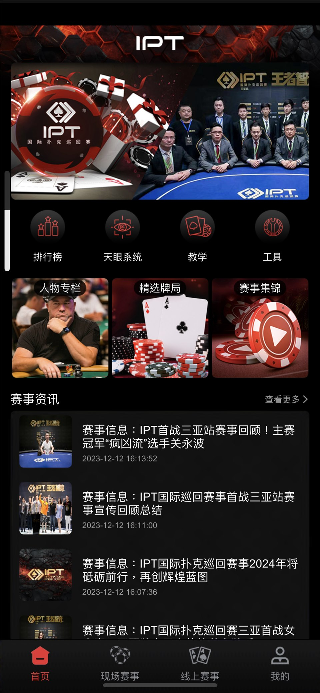
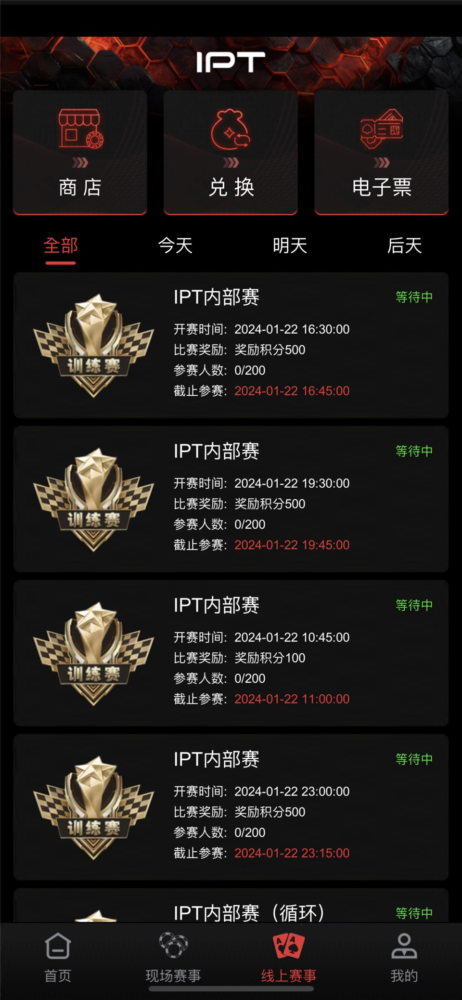

SNG 賽事
含 SNG 時序資料和賽事場景，完整實作需按程式碼核對。

SNG · MTT · Live Events
面向 SNG、MTT、線上錦標賽與線下活動，核對公開的 C++/Tars 服務、房間與玩家流程、介面定義及產品資料。
倉庫可見 GMServer、GMServantImp、gameserver、gameroot、DBOperator、Tars 介面和房間生命週期元件。它依賴外部 XGame/Tars 環境，不是已驗證的一鍵部署發行包。
含 SNG 時序資料和賽事場景，完整實作需按程式碼核對。
產品資料展示多桌賽事列表及賽事牌桌。
截圖展示賽事列表、資訊和內容入口。
截圖展示報名及現場服務，不能據此認定支付與票務實作完整。
